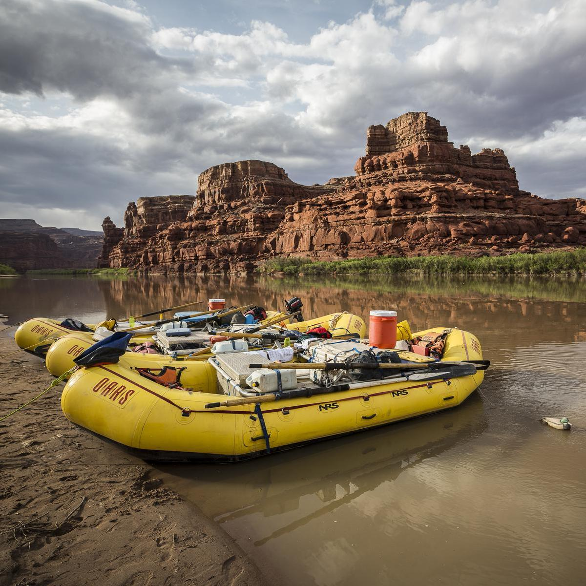
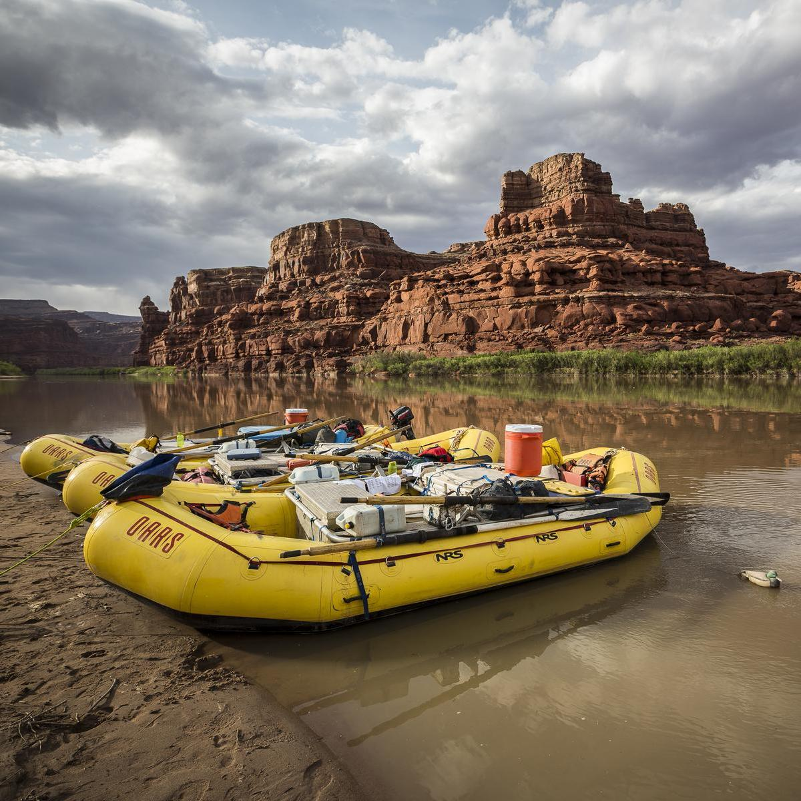

About Us

 



Our Story
Founded in 1957, Welcome to Michael Expeditions! Since 1957, we have been passionate about providing unforgettable rafting adventures. We discovered the best guides and sights in the mountains. When we were younger, we liked to go to mountains, long hiking trails, get wet and more. For thrill-seekers and nature lovers alike, our confident and experienced guides ensure safety and fun as you explore breathtaking rivers and stunning landscapes. Join us for an adventure of a lifetime!